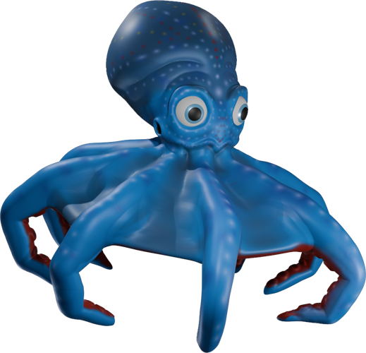

Conception et création de jeux vidéo et applications ludiques
Grand fan de jeux vidéo, j'ai voulu aller au delà du fait de jouer à un jeu vidéo, j'ai voulu en créer. Formé à Gaming Campus, j'ai acquis de l'expérience et du savoir dans le game design sur des projets personnels et semi professionnel.
De l'idée au gameplay, en passant par le level design, la création d'assets, la narration et la monétisation, j'ai la possibilité d'intervenir à chaque étape d'un projet de jeux vidéo.
Compétences en Unity et Unreal (avec plus d'heure de formation sur Unreal) et prototypage ainsi que l'expérience de travailler en équipe.
Une passion de convergence, car ce domaine me permet d'exprimer ma passion pour le jeux vidéo, pour la programmation et pour l'infographie 2D/3D, bref un domaine "multi-passionnant" !
Découvrez mes projets et prototypes réalisés avec passion.